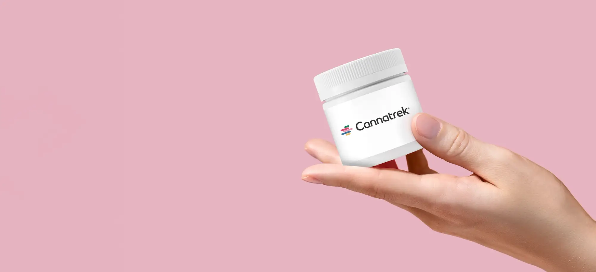
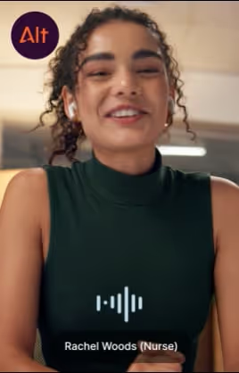
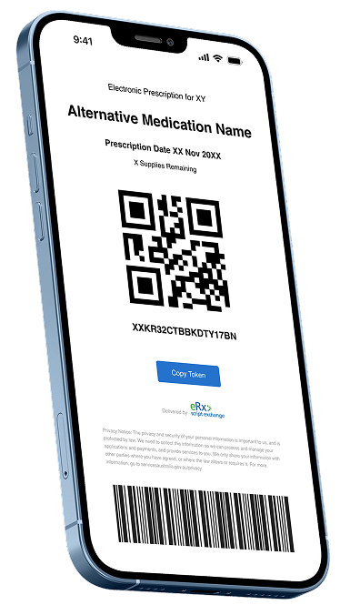

What began as a model we were still designing became an operation moving thousands of patient promises every week.
The journey in three chapters
Design the model. Build the muscle. Scale the promise.
Q4 planning
Design the model
uMeds rollout, Pharmacy 2.0, the right partners, scalable support, state-based stock and better patient visibility.
Q1 2025
Build operating muscle
96 partners, WA coverage, state-based inventory, dual carriers, Circuit–Shippit, Zendesk UTD and better reporting.
Now
Scale the promise
18,000+ weekly orders, same-day delivery, Click & Collect, auto-release, notifications and more patient choice.
The pattern across every offsite
Yesterday’s ambition became today’s baseline.
Manual → increasingly automated
National → state-aware
Reactive → visible and connected
Delivery-only → more patient choice
Each win moved the finish line. The progress came from people.
A pharmacy operations talk
The Human Advantage
Why better operations start before the KPI moves.
The work behind the number
18K+
orders every week
Each one is a patient promise.

Tell the whole truth
Roles changed. Work moved. Colleagues left.
There was a human cost. And this team kept moving.

The formula operations inherited
Do we wait for success before we allow ourselves to feel proud?
Backlog clears → KPI improves → then we breathe
→
Notice progress → create energy → improve the next handoff
Operations never runs out of next goals. We need energy before the finish line—not only after it.
No forced optimism
Positive means accurate + agentic.
1Allocate demand
2Maintain supply
3Resolve exceptions
4Support partners
5Protect patients
Not “everything is fine.” “This matters—and we can take the next useful action.”
Not potential—proof
Look at what this team already changed.
Same-day delivery
Click & Collect
Order auto-release
Zendesk automation
Patient notifications
21% packaging reduction
Delivery choices
Interval visibility
We are not starting from zero. We are starting from evidence that we can adapt.
The quiet work
The work nobody sees keeps the whole system moving.
The discrepancy caught early
The handoff closed properly
The risk raised before a delay
The teammate who stepped into a gap
We need to notice the saves—not only count the fires.

Two minutes at the end of the day
The 3–1–1 practice
3 things that moved
1 person thanked
1 friction made smaller
Try it now • 60 seconds
Your first 3–1–1.
Three things this team moved this year. One person you want to thank—and exactly why. One friction we can make smaller in H2.
Write it. Share one if you want. Send the thank-you before the day ends.
To the whole team
Thank you for keeping the promise moving.
Pharmacy Operations Partners. Fulfilment Admin. Warehouse and Logistics. Network Operations and Strategy. Every person who stepped into a gap, raised a risk, helped a colleague or protected a patient.
The Human Advantage
We do not wait for the work to become easy before we recognise each other.
That recognition is part of how we make the operation better.
Controls
→ or Space: next ←: previous F: full screen P: presenter notes Home/End: first/last ?: help